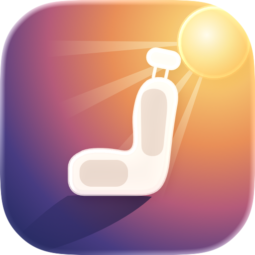

Support
Help with ShadeSeat
Questions or a result that looked wrong? Email akshay.aa3112@gmail.com. Including your route and departure time helps.
How does ShadeSeat decide?
It takes your route and travel time from Apple Maps, works out where the sun will be at each point of the trip, and compares how much direct sunlight reaches each side of the vehicle. Left and right are as you face the front.
Why might my seat still be sunny?
The result is an estimate. Clouds, buildings, trees, hills, tinted windows, curtains and where exactly you sit change what you feel. Timing-sensitive means a small delay could change the answer.
My bus takes a different road
Add the places your bus passes through as stops on the planner, or import the route as a GPX file. Bus results are labelled Route confirmed by you or Approximate route.
Are my trips backed up?
In this version trips are saved only on your iPhone.
Does it need location access?
No. Location is used only if you tap Current location.